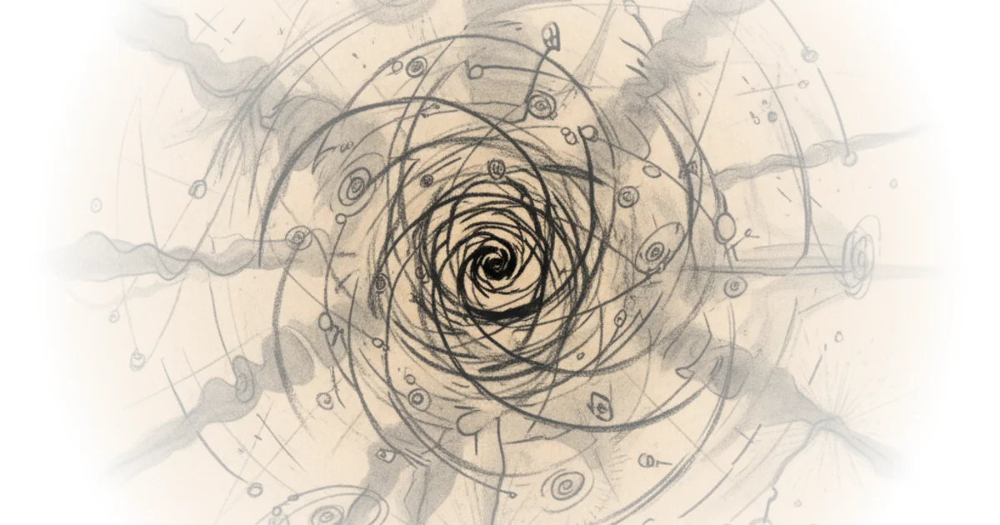

Most of Reality Is Invisible. We May Finally Be About to Reveal It
Commentary by Brian Edwards
Deep Dives
Explore these related deep dives:
- The Particle at the End of the Universe Amazon · Better World Books
- The Higgs Boson and Beyond Amazon · Better World Books
- Dark Matter and the Dinosaurs Amazon · Better World Books
-
Higgs boson
This specific theoretical mechanism describes how the Higgs boson could act as the 'portal' to a hidden dark sector of particles mentioned in the text.
-
Oliver Keith Baker
The article introduces this hypothetical family of invisible particles as a potential solution to the dark matter conundrum, distinct from standard model particles.
-
Hierarchy problem
The text notes the disappointment of not finding supersymmetric particles that would explain the Higgs mass, a central puzzle in particle physics that the LHC aimed to address.
Transcript excerpt on PBS Space Time
Thank you to boot.dev for supporting PBS. Some people worried that the large hydron collider would smash particles together so hard it would make black holes that would swallow the earth, open wormholes to other dimensions, etc. It didn't and it won't. But the LHC may be making a very different kind of portal, a portal to the dark sector.
This isn't another name for the upside down. Rather, it's a hypothetical family of elementary particles that exist in parallel to the familiar particles of the standard model, but are invisible to the standard model, invisible to us, and therefore could be the answer to the dark matter conundrum. And what is this portal? Well, it's the particle that the LHC was built to find in the first place, the Higgs boson.
We've got a couple of quick announcements before we start. First, our eternal battle against the algorithm continues. The best way to encourage YouTube to share our videos is to like and comment. Doing both really makes a difference.
And if you're new here, subscribe, hit the bell, and introduce yourself in the comments. We're friendly. Next up, we're excited to launch our composition of the universe nickel and enamel pin now with a holo foil backing. If you want to flex your knowledge of dark energy, dark matter, and the terrifyingly small slice of ordinary matter that you and our world is made of, check out our first pin of 2026.
And if you prefer your mornings fueled by dark energy, we've also got a brand new dark energy mug. Plus, our UV glow cur rotating black hole hoodies and shirts are still available. Links in the description. Now, on to the episode.
The Higgs boson was discovered with the Large Hadron Collider back in 2012. Physicists celebrated, a few collected their Nobel Prize, and they got back to work. They amped up the collider with the expectation of discovering the particles that would lead us to the next level of physics. For example, super symmetric particles that would simultaneously explain the Higgs mass give us candidates for a dark matter particle and even bolster string theory.
No such particles appeared. Okay, so maybe the undiscovered particles are just so massive that there wasn't enough energy yet to grant them that mass. E= MC², so not enough E for the needed M. So, we kept juicing up ...